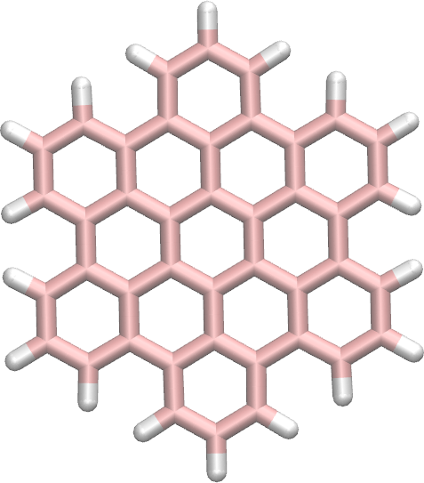
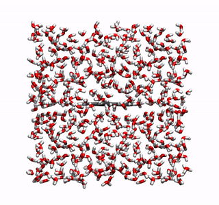
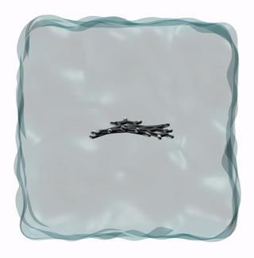
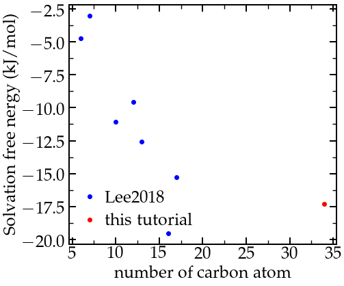

Left: Right:
The objective of this tutorial is to use GROMACS to perform a molecular dynamics simulation, and to calculate the free energy of solvation of a graphene-like molecule named hexabenzocoronene.
If you are new to GROMACS, I suggest you to follow this simpler tutorial first.
Click here to contact me.
Create two folders named 'preparation/' and 'solvation' in the same directory. Go to 'preparation/'.
Download the configuration files for the HBC molecule from the atb repository: click here, download the structure file 'All-Atom PDB (optimised geometry)' and place it in the 'preparation/' folder.
First, let us convert the pdb file into a gro file within a box of finite size using trj conv:
gmx trjconv -f FJEW_allatom_optimised_geometry.pdb -s FJEW_allatom_optimised_geometry.pdb -o hbc.gro -box 3 3 3 -center
Select 'system' for both centering and output. If you open the hbc.gro file with VMD, you will see:

HBC molecule with carbon atoms in pink and hydrogen atoms in white.
You can also download the hbc.gro I have generated.
From the same atb page, copy the 'GROMACS G54A7FF All-Atom (ITP file)' and place it in a folder named 'ff/' and located within the 'preparation/' folder. Within 'ff/' download as well the GROMACS top file named Gromacs 4.5.x-5.x.x 54a7 containing all the force field parameters. Then, let us write the topology file by simply creating a blank file named 'topol.top' within the 'preparation/' folder, and copying in it:
#include "ff/gromos54a7_atb.ff/forcefield.itp" #include "ff/FJEW_GROMACS_G54A7FF_allatom.itp" [ system ] Single HBC molecule [ molecules ] FJEW 1
Let us add water molecules. First download the tip4p water configuration file here, and copy it in the 'preparation/' folder. Then, in order to add (tip4p) water molecules to both gro and top file, use the gmx solvate command as follow:
gmx solvate -cs tip4p.gro -cp hbc.gro -o solvated.gro -p topol.top
You should see the following message:
Processing topology Adding line for 887 solvent molecules with resname (SOL) to topology file (topol.top)
and a new line 'SOL 887' in the topology file:
[ molecules ] FJEW 1 SOL 887
The created 'solvated.gro' file contains the positions of both HBC (called FJEW) and water molecules , you can download the file I have generated by clicking here.
The only missing information is the force field for the water molecule. In order to use the TIP4P/epsilon water model, which is one of the best classical model, copy the h2o.itp file in the 'ff/' folder and modify the beginning of the topology file as follow:
#include "ff/gromos54a7_atb.ff/forcefield.itp" #include "ff/FJEW_GROMACS_G54A7FF_allatom.itp" #include "ff/h2o.itp"
Create a new folder in the preparation/' folder, call it 'inputs', and save a new blank file, called min.mdp, in it. Copy the following lines into min.mdp:
integrator = steep nsteps = 5000 nstxout = 10 cutoff-scheme = Verlet nstlist = 10 ns_type = grid vdw-type = Cut-off rvdw = 1.4 coulombtype = pme fourierspacing = 0.1 pme-order = 4 rcoulomb = 1.4 constraint-algorithm = lincs constraints = hbonds
All these lines have been seen in the previous tutorial. In short, this script will perform a steepest decent by updating the atom positions according the the largest forces directions, until the energy and maximum forces reach a reasonable value. Apply the minimisation to the solvated box using :
gmx grompp -f inputs/min.mdp -c solvated.gro -p topol.top -o min -pp min -po min -maxwarn 1 gmx mdrun -v -deffnm min
Here the '-maxwarn 1' allows us to perform the simulation despite GROMACS' warning about some force field issue. Since this is a tutorial and not actual research, we ca safely ignore this warning. Let us visualize the atoms' trajectories during the minimization step using VMD by typing:
vmd solvate.gro min.trr
This is what I see:

Movie showing the motion of the atoms during the energy minimization. Note for VMD user: You can avoid having molecules 'cut in half' by the periodic boundary conditions by rewriting the trajectory using 'gmx trjconv -f min.trr -s min.tpr -o min_whole.trr -pbc whole'
Similar to what we did in the previous tutorial, let us perform successively a NVT and a NPT relaxation. Copy the nvt.mdp and the npt.mdp files into the inputs folder, and run them both using:
gmx grompp -f inputs/nvt.mdp -c min.gro -p topol.top -o nvt -pp nvt -po nvt -maxwarn 1 gmx mdrun -v -deffnm nvt gmx grompp -f inputs/npt.mdp -c nvt.gro -p topol.top -o npt -pp npt -po npt -maxwarn 1 gmx mdrun -v -deffnm npt
The simulation looks like that:

Movie showing the motion of the atoms during the NVT and NPT equilibration steps. For clarity, the water molecules are represented as a continuum field.
We are done with the first equilibration of the system. We are now going to perform the solvation free energy calculation, for which 21 independent simulations will be performed. Quick explanation of the procedure: The interactions between the HBC molecule and water are progressively turned-off, thus effectively mimicking the HBC molecule moving from bulk water to vacuum.
Within the 'solvation/' folder, create an 'inputs/' folders. Copy the two following npt_bis.mdp and pro.mdp files in it.
Both files contain the following commands that are related to the free energy calculation:
free_energy = yes vdw-lambdas = 0.0 0.1 0.2 0.3 0.4 0.5 0.6 0.7 0.8 0.9 1.0 1.0 1.0 1.0 1.0 1.0 1.0 1.0 1.0 1.0 1.0 coul-lambdas = 0.0 0.0 0.0 0.0 0.0 0.0 0.0 0.0 0.0 0.0 0.0 0.1 0.2 0.3 0.4 0.5 0.6 0.7 0.8 0.9 1.0 sc-alpha = 0.5 sc-power = 1 init-lambda-state = 0 couple-lambda0 = none couple-lambda1 = vdw-q nstdhdl = 100 calc_lambda_neighbors = -1 couple-moltype = FJEW
These lines specify that the decoupling between the molecule of interest (here FJEW) and the rest of the system (here water) must be done by progressively turning off van der Waals and Coulomb interactions. The nstdhdl control the frequency at which information are printed in a xvg file during the production run.
Copy as well the following topol.top file within the 'solvation/' folder (the only difference with the previous one if the path to the ff folder).
We need to create 21 folders, each containing the input files with different value of init-lambda-state (from 0 to 21). To do so, create a new bash file fine within the 'solvation/' folder, call it 'createfolders.sh' can copy the following lines in it:
#/bin/bash # delete runall.sh if it exist, then re-create it if test -f "runall.sh"; then rm runall.sh fi touch runall.sh echo '#/bin/bash' >> runall.sh echo '' >> runall.sh # folder for analysis mkdir -p dhdl # loop on the 21 lambda state for state in $(seq 0 20); do # create folder DIRNAME=lambdastate${state} mkdir -p $DIRNAME # copy the topology, inputs, and configuration file in the folder cp -r topol.top $DIRNAME cp -r ../preparation/npt.gro $DIRNAME/preparedstate.gro cp -r inputs $DIRNAME # replace the lambda state in both npt_bis and production mdp file newline='init-lambda-state = '$state linetoreplace=$(cat $DIRNAME/inputs/npt_bis.mdp | grep init-lambda-state) sed -i '/'"$linetoreplace"'/c\'"$newline" $DIRNAME/inputs/npt_bis.mdp sed -i '/'"$linetoreplace"'/c\'"$newline" $DIRNAME/inputs/pro.mdp # create a bash file to launch all the simulations echo 'cd '$DIRNAME >> runall.sh echo 'gmx grompp -f inputs/npt_bis.mdp -c preparedstate.gro -p topol.top -o npt_bis -pp npt_bis -po npt_bis -maxwarn 1' >> runall.sh echo 'gmx mdrun -v -deffnm npt_bis' >> runall.sh echo 'gmx grompp -f inputs/pro.mdp -c npt_bis.gro -p topol.top -o pro -pp pro -po pro -maxwarn 1' >> runall.sh echo 'gmx mdrun -v -deffnm pro' >> runall.sh echo 'cd ..' >> runall.sh echo '' >> runall.sh # create links for the analysis cd dhdl ln -sf ../$DIRNAME/pro.xvg md$state.xvg cd .. done
Execute the bash script by typing:
bash createfolders.sh
The bash file creates 21 folders, each containing the input files with init-lambda-state from 0 to 21, as well as a 'topol.top' file and a 'preparedstate.gro' corresponding to the last state of the system simulated in the 'preparation/' folder. Run all 21 simulations by executing the 'runall.sh' script:
bash runall.sh
This may take a while. When its complete, go the dhdl folder, and type:
gmx bar -f *.xvg
The value of the solvation energy is printed in the terminal:
total 0 - 20, DG -17.29 +/- 4.56
The value of -17.3 kJ/mol is somewhat reasonable:

Comparison of the calculated free energy of solvation with some other values for other similar graphene-like molecule. Results are plotted as a function of the number of carbon atoms of the molecules.